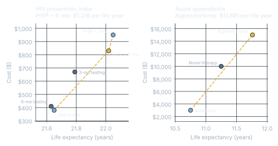

Healthcare Treatment Cost-Effectiveness
Healthcare Analytics coursework.
Research and healthCompleted
01Problem
Health systems have to decide which treatments are worth their cost.
02Approach
Markov models and decision trees with patient risk factors, discounting and sensitivity analysis, including a type 2 diabetes microsimulation comparing SGLT2, GLP-1 and traditional medication.
03Impact
PrEP with 6-month testing is cost-effective for HIV prevention in India ($1,216 per life year, under the $2,697 threshold). Appendectomy is cost-effective for appendicitis ($11,881 per life year), and combined hypertension treatment came to $36,900 per QALY.
Results

What I did
- Removed strongly dominated options (costlier and less effective), then extended-dominated ones (beaten by a mix of neighbors), and computed ICERs along the remaining frontier.
- Type 2 diabetes microsimulation comparing SGLT2 inhibitors, GLP-1 drugs and traditional medication, with patient-level risk equations, 3% discounting and tornado sensitivity analysis.
- Chest pain decision tree: wait-and-see beat immediate thrombolysis on both survival and expected life years.
Code
def icer_frontier(strategies):
"""strategies: (name, cost, life_years). Returns the efficient frontier with ICERs."""
s = sorted(strategies, key=lambda x: x[2])
# strong dominance: another option costs no more and gives at least as much benefit
s = [a for a in s if not any(b is not a and b[1] <= a[1] and b[2] >= a[2] for b in s)]
while True:
icers = [(s[i][1] - s[i-1][1]) / (s[i][2] - s[i-1][2]) for i in range(1, len(s))]
drop = next((i for i in range(1, len(icers)) if icers[i] < icers[i-1]), None)
if drop is None:
return list(zip([x[0] for x in s], [None] + [round(v) for v in icers]))
s.pop(drop) # extended dominance
icer_frontier([("Antibiotics", 3000, 10.75), ("Novel therapy", 10000, 11.25), ("Appendectomy", 15000, 11.76)])
# [('Antibiotics', None), ('Appendectomy', 11881)]Tools
TreeAge ProPythonExcel